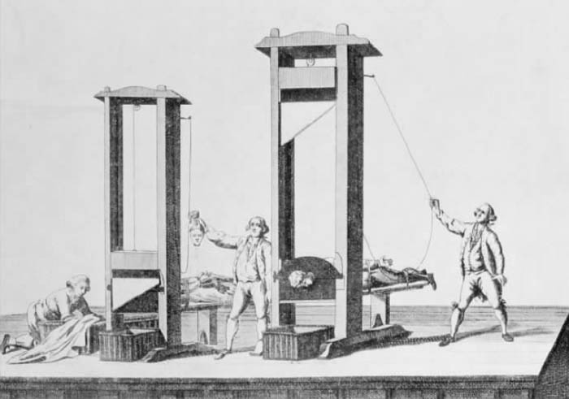

批判哲学考察的是思维结构，并且告诉我们通过这种结构什么能被证实，什么不能被证实。它判断所有哲学，它的原理不是普通的证据，而是有关可证实事物的证据。简而言之，这是一种元哲学，一种有关哲学的哲学。它预示了元逻辑和数学，在塔斯基和哥德尔手中，元逻辑和元数学改变了我们有关数学推理的概念，削弱了那些对于康德将数学视为一种先天综合真理的批评。
这并不意味着康德哲学没有结果或无力挑战流行的正统观点。恰恰相反，康德认为，在实践领域，批判的方法与道德判断直接联系，能够得出人们不得不接受的结论，即使否认这种结论会对他们有利。道德是实践推理的核心，却不是全部。康德在其晚年转而关注政治学，希望通过使用批判方法来解决某些关于合法性和权利的难题。
由卢梭提出的关于人类社会和制度的观点，使自由个体的自我立法成为了合法政治秩序的基础。对于康德及其同时代人，这些观点的重要性日益增加。它鼓励人们愈加质疑权威；它将个体良知放在教会和国家命令之前；它使人们相信进步，视进步为人性从迷信的服从下解脱的天然条件。康德的道德哲学从自我立法的观念中发展出一整套关于义务的完整体系，它给予政治学新观点以最终的哲学认可；启蒙（Aufkärung），后人都知与康德密切相关，康德是其最清晰、最明确的阐释者。实际上，正是康德第一个尝试将“启蒙”定义为“人类摆脱自我强加的不成熟状态而获得解放”，并补充说这种不成熟状态“不在于缺少理解力，而是缺少在没有其他人帮助下利用理解力的决心和勇气”（《什么是启蒙？》，《康德：政治学论述》，54）。
康德对共和的同情在他那个时代即众所周知，尽管他明确反对革命，将革命视做向自然状态的倒退——这种倒退无法用理性证明其合理性，因为它使理性规则成为不可能。法国大革命中的暴力使康德坚定了对革命的怀疑，但并未削弱他对卢梭的仰慕，也没有削弱他对启蒙前景的信心，这种前景其他许多革命者也同样期待。
未著的批判
康德有关政治学的著作完成于他生命活跃期的最后十年。其中最重要的一部通常认为是《正义的形而上学要素》，它是《道德形而上学》的第一部分，于1797年首次出版，1798年再版。两个版本的文章都出现了错误或晦涩之处，致使许多评论家认为，康德的精力已经在衰退，而他政治哲学的基础却并未建立。但近年来的研究倾向于认为，演讲稿和其他无关的材料可能被混入了文章中，因为誊抄草稿时康德越来越依赖他的文书。不管《道德形而上学》写作的真相如何，可以确定的一点是，它不包含“政治理性评判”，也不包含其他源自合法政治秩序这一观念的先天原则的内容。在我看来，同样确定的是，康德后期著作中包含了政治批判哲学的种子，这部未著的第四部《批判》与其他三大评判一样值得研究。
普遍主义
康德是“启蒙普遍主义”的先知。他相信唯一而普遍的人性，在考察局部制度的合法性和权威性时，我们应该诉诸这种人性。既然实践理性对于任何地方的人都有效，就不该存在以权威之名提出的特殊辩护，这些权威要求服从的唯一主张仅仅是历史将他们放到了现在的位置。另一方面，从人类事务中荡涤一切历史遗迹是不可能的——并且有退回自然状态、重归一切人反对一切人的战争的危险。因此，康德认为，诉诸普遍人性时必须采取规定性而非构成性观念的形式。我们不该谋求为全人类建立单一法律；而应该根据某些先天制约因素来判断每种权限，与这些先天制约相符正是权力合法性的标志。
此外，既然人类事务中的所有权威都源自理性，而理性是每一个人都具有的，我们就必须承认，每个人都平等地承担政治秩序的利益和负担。在此基础上，奴隶制明显要被排除；专制也是如此，它的唯一目的就是赋予某一人凌驾于他人之上的权力，或赋予某一阶层特权，使其他阶层无法共享其利益。所以，在其政治著作中，康德的行文似乎表明，种族和阶层的区别不存在固有的政治意义，公民权利应该是全人类的追求。
事实上，康德比大多数同时代人都走得更远。在《永久和平》（1795）中，他提出了对普遍政府形式的初步系统论证——这种政府形式超越国家界限，清除对人群的任意划分，这种划分在康德看来正是人类互怀敌意的真正原因。正是因为康德，才有了“联盟”或“各国联邦”的观念；跨国立法的现代制度正体现了他的理论。
社会契约
如我们所料，既然康德的伦理学说具有法条化的形式，他的政治思想也带有法学的特征。对于康德来说，政治体制首先而且最重要的，应是一个法律系统。同时，他追随霍布斯、洛克和卢梭，提出将社会契约作为政治合法性的最终检验标准。一个政治体制只有获得了那些从属于它的人们的赞同，才能声称拥有客观权威。社会契约因此是“这样一种契约，只有以它为基础，一种保障民权因而完全合法的宪法才有根据，一个社会共同体才能建立”（《惯常说法》，《康德：政治学论述》，79）。然而，康德与其前人有一个关键的不同之处。社会契约对于康德来说是一种规定性而非构成性的原则。我们不该假定，在合法的社会秩序中真存在一个契约，不管是明确的还是暗示的。社会是以其他方式产生的，并且总是背负着历史遗迹的重担，要抹去这个遗迹，就必然会引起不公正或暴力。因此，我们应该将社会契约仅看做一种限制性理性观念——任何现实法律秩序要获得正当性，都必须通过它的检验。所以，社会契约采取下面的形式：“如果制定的一项法律，整个民族的人都没有可能 给予同意……这项法律就是非正义的；但如果一个民族完全可能 同意它，这个民族的义务就是将这项法律视为正义的，甚至假定他们目前的思维方式是，若被询问，他们很可能会拒绝同意。”（《惯常说法》，《康德：政治学论述》，79）
这个定义极其模糊，在“整个民族”、“一个民族”和“这个民族”之间意义含糊地来回转换。在我看来，最好的组织方式似应是这样的：每个公民对于每项法律都拥有绝对的否决权，但是他只有在能够 不同意这项法律的情况下才能实施否决权。他不赞同这个事实还不足以作为异议的根据。原因在于，我们实际上赞同什么取决于我们的欲望、环境和“经验条件”。如果我们想仅用理性解决问题，就必须忽视所有这些条件。（注意与绝对律令的对应关系。）因此，说到社会契约，我们并不是指诸经验自我之间的实际协议，而是纯粹本体存在者之间的假言协议。从纯粹实践理性的角度看，我们每个人都是这样一个本体存在者。
通过抽象化获得的这种假言社会契约观念，近年来被约翰·罗尔斯复兴，用于检验一个社会中各种利益的公正分配。然而，康德对于分配没有兴趣，只对法律感兴趣。尽管他认为所有公民在公民权上平等，因而拥有平等的权利和义务，“社会正义”这一现代观念却并不在其考虑之内。康德相信法律面前的平等和公民的平等权利，却认为这与财产极端不平等并不矛盾。（《惯常说法》，《康德：政治学论述》，75）
自然法
普鲁士流行的法律体系直接源自罗马法。康德对于罗马法怀有崇高敬意，尤其因为它是趋向普遍法则的尝试，它既考虑当地传统和历史制度，又重视对全人类都适用的哲学原则。罗马法特别将人创法和自然法区分开来，前者是世俗统治者的领域，后者的权威来自人类天性并立基于任何局部法律系统之上。因此，人创法可能支持奴隶制并界定奴隶的权利和义务，自然法却来自纯理性，不可能认同这种关系的存在。
中世纪的法学家和哲学家十分关注自然法概念，认为它是在用法律形式记录被揭示的上帝意志。康德则从另一角度，认为自然法是批判哲学的一种证明。对于他来说，自然法完全是对绝对律令的法律表达。因此，他从罗马法中看到了证据，证明法律推理自动遵守实践理性的先天综合原理，而他已经找到了这种原理的证据（《道德形而上学》，236—237）。
人与物
康德的道德哲学还印证了罗马法中另一概念，即人（Persona）的概念的说服力。Persona这个词原指面具，用于描述舞台上演员所呈现的性格特点。罗马法借用这个词指代法庭中的当事人，当事人的权利和义务由法律界定，在某种意义上当事人是他所面对的法律的创造物。法律人是法律权限（权利、自由等）和法律负担（义务、惩罚等）的承受者。正如康德所洞见，最终这是个形而上学而非法律概念，它假设自由主体 和经验对象 在实在性方面存在区别。权利和义务无法附加在对象上，因为对象受到经验条件和法律的束缚。它们只能附加在自由的主体上，如康德在其道德哲学中定义的那样。支配人类社会的法律，被指向本体自我。
人在政治思维背景下具有三个突出特征：责任性、自我立法的力量和以其自身为目的的天性。他们对于自己的行为负有责任，因此人与人之间形成一种特殊的关系，这种关系是政治秩序的基础。世界的改变会被归咎 于人，不管这些改变是因行为还是因疏忽引起的（《道德形而上学》，239）。通过法律，这种归罪成为一种普遍关系，将每个人与社会联系起来，并且使每个人对自己的行为和疏忽负责。
人是目的王国中进行自我立法的成员，所以他们也受制于两种约束——内在约束和外在约束。内在立法是由绝对律令要求的，任何正义的法律都不会与其冲突。但是还有外在立法，在其中，道德法则既不要求也不禁止的一些行为却受到国家的强求或禁止。社会契约（如上介定）是检验这种外在立法合法性的标准，它并未明说，如果这种立法转而去推翻内在的义务要求，它就永远不能被接受。
此外，法律必须尊重人的天性，其自身即目的。奴役、欺诈和残暴镇压都与绝对律令相抵触。政治秩序的一个核心要求就是，人在与他人和国家发生关联时，应该能够将他人和国家作为目的而非仅仅作为工具。
人权
在康德眼中，法律和道德一样具有形而上学基础，并因此先天地以先验自由观念为基础。他使用下述含糊的语句指出了一条关于正义的单一普遍原则：“每一个行为，如果它或者它的准则允许每个人的选择自由与其他所有人的自由根据一种普遍法则共存，这个行为就是正义的［recht］。”（《道德形而上学》，230）对于译者来说，这是个著名的难题，因为名词Recht可指“权利”也可指“法律”，形容词recht既可指“正义的”也可指“正确的”。此处的形容词出现在正义理论的语境中，而正义理论的主要目的就是连结正义和自由这两个观念——我的译法就是这么来的。康德普遍原则还可以表达得更清楚些：如果一个行为尊重他人的自由，并且不是偶然而是根据原则，这个行为就是正义的。每个自由行为都必须容纳他人的自由。对于康德来说，正义的基本要求的另一种表述方法即，所有人本身都将被视做目的，而非永远仅被视为工具。
这个普遍原则与强制并不矛盾，但高压统治必须总是将其最终目标定为建立一种体制，在这种体制里盛行公正——以及相互自由。康德利用此明智方法修正了卢梭的那个众所周知的准则，即在一个基于社会契约建立的国家，持异议者必须“被迫自由”。
根据康德的正义观，只存在一种内在的或“自然的”权利，那就是自由本身：“自由（独立于他人意志的约束），只要它根据某种普遍法则而与其他所有人享有的自由共存，它就是每个人因生而为人所享有的唯一而最初的权利。”（《道德形而上学》，237）限制条件在此非常重要：我没有随意行事的自然权利；相反，我拥有不限制他人自由而运用自己的自由的权利。这个原则是“古典自由主义”的基础，现在仍然是许多西方宪法的不成文条款。
从先天原则到普遍约束着政府的人权观念，只迈出了一小步。用“人”权而非“民”权，我们援引了自然法，以及对所有地点和时间的立法作出约束的普遍原理。不仅如此，康德将人本身视做目的的强有力观念，为这些普遍权利提示了基本形式：在其拥有者手中，它们就是否决权。未经我的同意，有些事你就不能对我做出，并且这个事实使我对自己的生活拥有一种主导权，他人如果侵犯或贬损是不正当的。这种个体主权在法律上体现为一系列的权利：生命权、身体权和财产权，和平达成自己目的的权利，同他人产生法律关系的权利，等等。
尽管这样看来，康德称得上是现代人权理论的最伟大先驱，他却并未低能到认为（现在许多人以为）可以只享受权利而不尽义务。事实上，康德的权利概念在重要性方面次于义务概念。只有遵守尊重他人权利的义务，我的权利才能得到实现；正是义务动机在所有涉及市民权利的内容中被间接提及（《道德形而上学》，239）。只有在准备好付出代价时，我才能够主张权利；代价就是接受通过我的主张而施加给你的相同的义务。我尤其有义务支持正义的普遍原则，这意味着我必须接受并赞同惩罚系统；没有惩罚系统，就不会有法律和共同体的延续（《道德形而上学》，331—332）。
共和理想
康德将合法政治体制视做一个法律体系，建立时着眼于对人的尊重，根据共和原则进行组织。受法国启蒙思想家，尤其是孟德斯鸠的影响，康德认为共和政体是一种特殊形式的政府，它赋予其成员以特殊的地位。你有可能是一个独裁统治者的臣民 ，但是在一个共和国中，你只可能是一个公民 ：公民和共和国的概念是一个单一复合观念中互相依存的两个部分。在共和政体中，人民自己创建管理他们的法律，这些法律表达了“公意”（正如康德效仿卢梭所称的），被统治者的同意正是通过公意获得的（《道德形而上学》，313—314）。

图15 断头台，法国革命的象征
只有存在代议制政府，立法机关成为人民这个总体的代言人，共和政体才能存在。代表的过程将人民的内在主权转化为实在的统治权力，康德从法人模式中看到了这一点：一个集体决策的论坛，在这里人民的总体利益通过法律获得提升，而这个论坛本身又要向它制定的法律负责（《道德形而上学》，341）。如何达成代议制政府，这是康德政治哲学中的晦涩处之一（有些人认为这些晦涩应受责备）。康德曾在某处声称，“只有适合投票的人才有资格成为公民”（《道德形而上学》，314）。这表明康德是民主政体的支持者，但他随即又对上述说法进行限定，即同意法国革命者阿贝·西哀士的做法，区分主动公民和被动公民——后一个阶层不享有投票权，它包括所有无法完全独立的人。他将奴仆、未成年人、学徒以及所有妇女归入被动公民之列，认为“所有这些人缺少公民人格”，但这个事实却“无损他们作为组成人民的人 所享有的自由和平等”（《道德形而上学》，315）。在别处，康德批评民主是另一种形式的暴政（《永久和平》，《道德形而上学》，101），并且坚称共和政府的观念同民主选择没有内在联系。这个问题我们不再深入探究，但至少可以肯定一点：不管康德的公民权概念同当时中欧流行的政府形式多么格格不入，它都与当今的民主观念相去甚远。
分权
康德对于代议制的描述不够完善，这个缺憾在某种程度上被他关于分权的精妙辩护所弥补；分权观念由洛克引入政治哲学，随后被孟德斯鸠深化。和孟德斯鸠一样，康德将国家的立法、司法和行政权区分开，认为每种权力都应被视做一个“道德的人”（即拥有权利和义务的负责的行为主体），同时又承认，它们不能独立存在，必须互相依赖、互相从属（《道德形而上学》，316）。政府的要务就在于维持这些权力之间的平衡，使得人民的“公意”能够在立法会议中得到表达。康德明确地认为多数人的投票本身不能产生正当法律。需要的是这样一个立法程序 ，通过它，人民的不同利益能够保持平衡且服从于司法审查。只有这样，才能保障每个公民的权利并避免专制的威胁。
这部分地解释了康德对于民主的敌意。他以为，在一个纯粹的民主政体中，政府与被管理者合为一体。在这种情况下，大多数人的专制欲念会直接转化为法律，不管每个人的权利与自由是否能以此得到尊重。要尊重自由，对权力的急切运行就要有制动装置。由此，法律必须由一方制定，另一方实施，第三方裁决，而绝不是由大多数人制定和实施。
康德的共和政体同君主立宪制并无矛盾，尽管他在许多地方表达了对于权力世袭，尤其是贵族特权世袭的敌意。最终，康德没能给出民主政体的替代品，这让他的读者仍不明白，共和政体的立法机构应该如何产生，以及要想成为人民这个总体的代表，必须达到什么样的条件。看来，康德似乎将代议制共和政体视做一个理性理想，我们可以接近却永难实现。他强烈反对所有形式的突变，并在总体上支持，对不违反绝对律令的任何形式的统治权采取服从态度。不久前的恐怖事件更使康德反对革命，尤其是弑君，而他对于民主政体的态度可以用甘地描述西方文明的语言来总结，即“这个观念不错”；但对于康德来说，观念总是“理性观念”，即总是指导实践，而非描述可能的实在性。
私有财产
在公民依据正义的普遍原则所享有的权利之中，康德指出财产权是重中之重，并尝试对所有权进行一种先验演绎，以回答“对象如何属于我？”这个问题（《道德形而上学》，249）。他将感性 财产和知性 财产区分开，前者指一种经验关系，后者是一种权利关系（《道德形而上学》，245）。他认为，所有关于权利的一般命题都是先天的，因为它们是理性法则：因此它们涉及智力或本体领域，而从实践理性的观点看，我自己就是其中的一部分。
财产权的基础不仅仅是先天的：它们牵涉到先天综合 律令，如道德法则律令。说一个对象是我的，就是在我作为自由存在者的主权上增加肯定性的东西——某种不仅包含在自由概念里的东西。哲学家们徒劳地努力使增加的东西合法化，却未发现只有通过某种先验论证才能做到，这种先验论证会表明所有权有可能成为实践理性的先决条件。康德并未成功地提出这个论证：但他正确地指出，财产权的本质显现于这种权利被滥用时所遭遇的侵犯。这种侵犯拒绝认可另一方的存在以自身为目的，因此也不假定他是个自由、理性的主体。
黑格尔随后采纳了康德的论点，认为私有财产是理性主体的自主性和自我身份在客观世界中得到实现的工具。通过黑格尔，康德的财产概念成为19世纪知识界重要政治辩论的焦点，辩论双方分别为社会主义者及其反对者。
市民社会
在写作政治学论著的过程中，康德描述了“市民社会”——一种通过法律组织、处于最高立法权下的社会（《道德形而上学》，256—257）。康德称，在这样的社会里，必定会有财产、契约以及支持它们的法律，还必定有经济生活以及促成陌生人缔结合同的手段。因此康德提出一种货币理论，并指出货币的象征性质，认为货币是“这样一种东西，要使用它只能通过它的异化”（《道德形而上学》，286）——这个特征表明拥有金钱代表着必定拥有另外一种东西，其实就是拥有支配他人劳动的权力。所以，康德给了金钱一个“真正的定义”，即“人的劳动进行交换的普遍手段”（《道德形而上学》，287）。这个定义为19世纪对异化劳动的讨论作了铺垫，康德关于人的理论对这场讨论也有影响。
康德还讨论了性和性关系在市民社会中的地位，这使他显得不同于其他政治哲学家。他承认，性道德给自由主义世界观出了道难题。为什么国家要关注“成人在私下相互同意”的行为？尤其是，为什么道德上也要关注它，如果行为各方和其他人都没有受到损害？自由哲学家如何能不支持作为政治必要性和道德理想的性自由？
面对这个问题时，康德再次用到人以自身为目的这个概念。他大胆地（并且正确地）指出，存在着这样一种性行为，其中的另一方被视做物，而非人；可以说，其中的主体被客体所遮蔽。这就是我们说到“变态”这个词时所意指或应该意指的，这种变态违悖了对另一方和对自己的根本义务（《道德形而上学》，278—279）。康德性道德的内容（同基督教婚姻观一致，在康德时代流行）也许并不受到所有现代读者的认同。然而，正是康德首先探究性问题中的紧迫内容，探究为什么有些人会受到他人欲望的危害，为什么在我们的性遭遇中人格会处境危险。康德能够阐明这个难题，这又进一步强化了他的一个看法，即通过人的理论，他已经弄清了人类所处的形而上学困境。
永久和平
康德支持共和理想——自由和平等公民权的理想，法律在此由人民作为整体自我立法——基于以下两个理由。第一，他将共和理想视做绝对律令的先天结论。第二，他认为共和制政府是国际和平的先决条件。当个体利益凌驾于正义的要求之上，当专制权力将其意志以暴力强加于他人而获得益处时，战争就开始了。如果世界国家是以共和政体组织的，只有获得公民整体的同意才能通过一个决定，那么实践理性的先天法则在政治决策中就会发出自己的声音。战争将被排除在外，不仅因为它是一种实现集体目的的非正义手段，而且因为它是违悖公共利益的愚蠢之举。也就是说，它既和道德的绝对律令又和生存的假言律令相冲突。
然而，“永久和平”状态不可能立即实现或通过法令实现。因为，即使是共和政体，这些国家之间仍处于一种面对面的自然状态，因此各国对于邻国是个“长期的威胁”（《永久和平》，《康德：政治学论述》，102）。必须迈出积极的步伐来扫除世界各民族之间的障碍。正如对于个人来说，废止自然状态以进入市民社会、享受权利带来的自由，这符合他们的利益；同样，对于国家来说，服从于一个共同的法律体系并超越折磨人类历史的不成熟的好战状态，也是有益的。我们应该追随“世界共和”的观念（《永久和平》，《康德：政治学论述》，105）——这个条件在现实中无法达到，却能够调节各个国家之间的交往，在不知不觉间将它们转化为联盟。这个共和国的联盟，联合于国际法，能够保证国家之间的和平。每个共和国都将支持保护他们不受侵略的法律，每个国家都将赞同一个统一的权利规则以保证他们之间的公平交往。
如其他许多散布于其政治思想中的知性结构一样，康德的“世界共和”是一个“理性理想”。这种理想学说是明显反乌托邦的。乌托邦主义者认为理想可以实现，并由此着手摧毁挡在路上的一切障碍。而康德派认为理想无法实现，因为我们活在一个不完美的世界中，受到经验环境的阻碍。理想必须被解释为调节性原则，它们指引我们走上改良的道路。因此，我们总是必须去进行修正，而不是去摧毁。
在探究其世界政府理想的过程中，康德对殖民主义进行了尖锐的批判，并声称只有在共和国联盟内，政治与道德才能够彼此一致。未达成这种联盟之前，政治家要想推进国家利益，就得依赖诡计、谎言和欺骗手段。因国家间实际关系而成为必须的保密惯例违反了“公共权利的先验公式”，即如果一个行为与开诚布公不相容，这个行为就是错误的（《永久和平》，《康德：政治学论述》，126）。我们应该致力于促成开放政府，让国家间的交往像人与人之间的交往一样满布正直和诚实，而这些都由绝对律令指导。对人的尊重应该延伸到代表我们的国家；因为他们也是人，他们的权利和义务，如同我们的一样，也要由一个单一的道德法则来界定。
康德的政治观点吸引了许多随后的哲学家和法学家，并且在他去世之后的两个世纪里仍然意义重大。之后的战争和革命使得康德的乐观主义不再流行，但他对自然法和人权的诉诸、他从先验自由的前提推出正义理论的努力却具有持久的意义。假若康德预见了毁灭他美丽故乡的那些事件（还有无数的其他灾难），预见到了对故乡居民的集体屠杀，也许他对人类天性就不再那么有信心，这种信心即使在他对正义的最抽象论证中，也透着光芒。然而，这种信心仍然激励着一些人，他们如康德那样相信，理性可以通过它直接的律令和无法实现的理想引导我们。